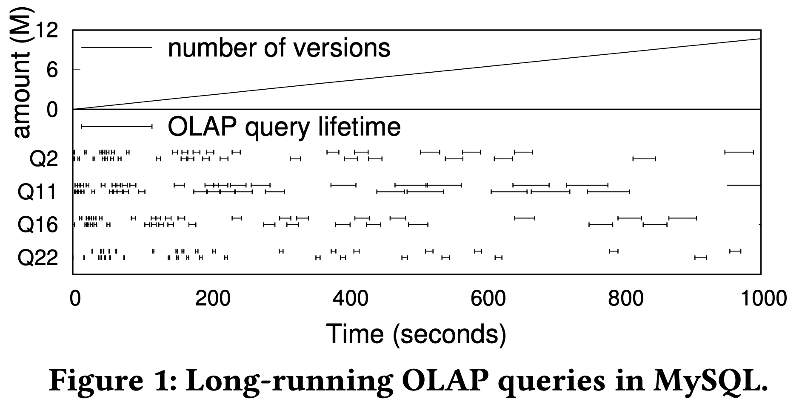
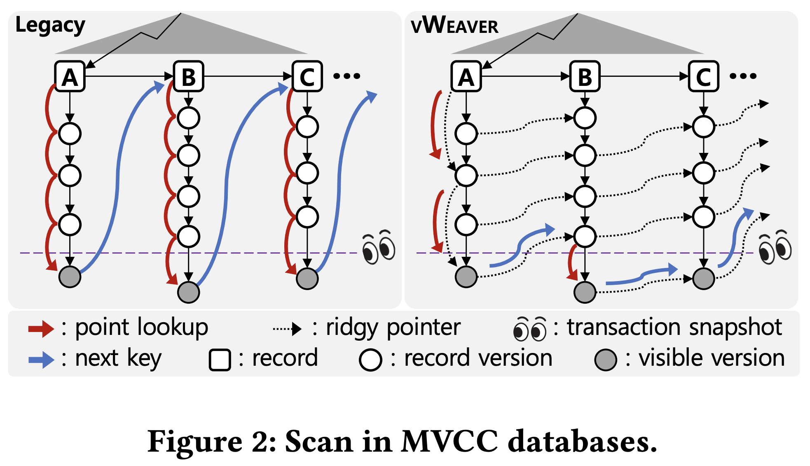
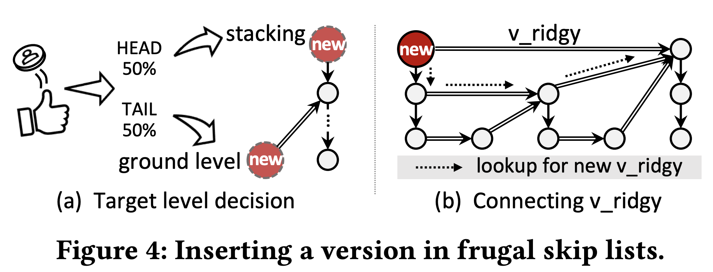
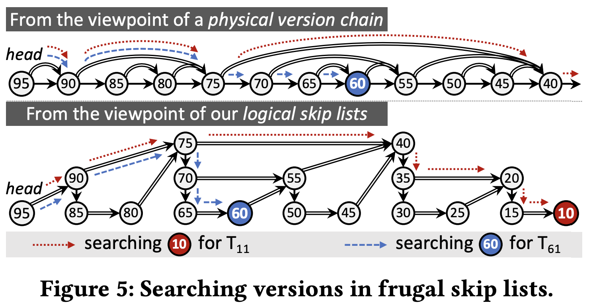
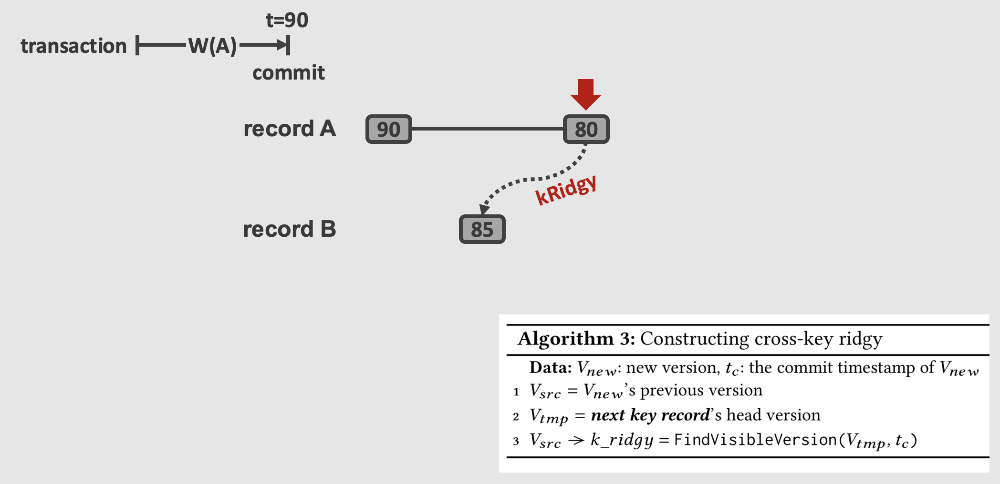

서울대학교 데이터사이언스대학원 정형수 교수님의 "빅데이터 및 지식 관리 시스템 2" 강의를 필기한 내용입니다.
완성되지 않은 강의록
- 사진이랑 보충 설명 넣고, vWeaver 는 별도의 논문 리뷰 작물로 분리할 계획입니다.
MVCC and Index
- MVCC 와 index 는 서로 조화되기가 힘들다는 것이 DB 커뮤니티에 많이 알려진 사실이다.
- 왜냐면 일단 version chain node 는 여러 page 에 흩뿌려지는데
- Index scan 을 하면 index 순서대로 저장되어 있을것이라 기대하고 sequential read 하기를 원하는데 MVCC 때문에 version tracversal 하다 보면 결국에는 sequential read 가 아니라 random read 가 되기 때문이다.
- 만약에 Long-Lived Transaction (LLT) 가 하나 있으면 상황은 더 최악이 된다: version 이 계속 쌓이기 때문에, 이 version traversal overhead 가 계속 커지기 때문.

- 그래서 위 그림처럼 CH-benCHmark 에서 update 가 계속 들어오다보면 index scan query 가 처음에는 경장히 빨리 돌지만 시간이 갈수록 점점 느려지는 상황이 발생하게 된다.
vWeaver (SIGMOD’21)

- 이러한 문제 상황에서, 이 논문은 다음의 두 가지 아이디어로 문제를 해결한다.
- 일단 version chain 에 대해서는, Skip List 를 변형한 자료구조를 통해 version chain traversal 을 가속화시키는 것
- 그리고 Index scan 에 대해서는, 하나의 version chain 에서 visible 한 version 을 찾은 다음, 다음 key 에 대한 version chain traversal 을 할 때 head 부터 시작하지 말고 중간 어디쯤부터 시작하게 할 수 있도록 지름길을 뚫어놓자는 것이다.
Frugal Skip Lists
- 일단 version chain traversal 을 linear time 이 아니라 logarithmic-time 으로 만들기 위해 고려해볼 만한 후보군을 생각해 보자.
- 일단 B+tree 같은 tree 는 당연히 사용 못한다. Inner node 를 위한 추가적인 space overhead 도 들고, GC 를 하기에도 복잡하기 때문.
- 그리고 정렬되어있긴 하지만 자료구조 변경 없이 pure binary search 도 안된다 (linked list 이기 때문에 middle point 로 갈 수 없기 때문).
- 여기서 생각할 수 있는 자료구조는 Skip List 이다.
- Skip List 는 기본적으로 list 인데, 여기에 skipping 을 위한 추가적인 pointer 만 좀 추가된 형태이기 때문에 space overhead 도 적고 list 라는 점에서 기존의 GC scheme 과도 잘 어우러진다.
- 근데 Skip List 는 문제가 있다.
- Skip List 는 각 level 별 head pointer 가 있는데 (이것을 Sentinel 이라고 한다), Skip List 는 기본적으로 level 이 무한대이기 때문에 이 Sentinel 의 크기를 미리 알 수 없고 이놈이 또 너무 커지면 space overhead 가 커지기 떄문이다.
- 이 문제를 해결하기 위해 이 논문에서 고안한 자료구조가 Frugal Skip List 이다.

- 여기서는 위와 같은 방법으로 push 를 한다.
- 우선, node 를 list head 에 넣고 이전 head 는 next pointer 로 연결해 주는데, Skip List 에서 처럼 coin toss 를 하는 대신 Skip List 와는 다르게 한번만 한다.
- 50% 확률로 grounding: level 1 이 할당됨 (즉, 그냥 바닥에 깔림)
- 50% 확률로 stacking: 기존의 head node 의 level + 1 이 할당됨 (즉, 위로 올라탐)
- 그리고 stacking 을 했으면, list traversal 을 하며 자신의 level 보다 크거나 같은 첫번째 node 를 골라 Ridgy pointer 에게 연결한다.
- Ridgy 는 산 능선을 뜻하는데, 이건 ridgy pointer 를 연결했을 때 산 능선과 같은 모양을 하기 때문이다.
- 그리고 이 list traversal 는 overhead 이긴 하다.

- 그래서 결과적으로는 위와 같은 모양이 되고, target 을 찾아가는 것도 Skip List 에서와 유사하게 next pointer 가 가리키는 값과 ridgy pointer 가 가리키는 값을 이용해 아래로 내려갈지 (next) 아니면 옆으로 skip 할지 (ridgy) 결정하게 된다.
- 일단 이놈이 Skip List 와 유사한 이유를 좀 생각해 보자.
- Skip List 에서는 확률적으로 level 이 높아지고, level 이 높아짐에 따라 더 많은 양의 node 를 skip 해서 여기에 도달할 수 있게 된다.
- Frugal Skip List 에서도 마찬가지고 확률적으로 level 이 높아진다. 다만, 기존의 Skip List 에서는 하나의 node 에 대해서 각 level 을 독립실행으로 coin toss 를 했다면, Frugal Skip List 에서는 이 여러번의 독립실행 coin toss 가 각 node 에게 분배된 것이나 마찬가지이다.
- 그리고 저 ridgy pointer 에 의해 Frugal Skip List 에서도 동일하게 level 이 높아질 수록 더 많은 양을 skip 할 수 있게 된다.
- 그럼 이게 왜 Skip List 의 단점을 없애주는지 알아보자.
- Skip List 에서의 단점은 Sentinel 이었는데, 이놈의 역할을 잘 생각해 보면 binary probing (즉, skip 할까? 아니면 아래로 내려갈까?) 을 시작하는 시작 지점을 알려주는 역할을 했었다.
- 즉, 어디서부터 binary probing 을 시작할까를 알아야 하는데, Skip List 에서는 그것을 Sentinel 을 이용해 한번에 알 수 있게 해주는 것이고, Frugal Skip List 에서는 Sentinel 을 없앤 대신 저 ridgy pointer 로 시작지점 또한 binary probing 으로 알 수 있게 해주는 것이다.
Cross-Key Ridgy Pointer (kRidgy)
- 이놈이 위에서 말한 version chain 간에 지름길을 만들어서 다음 key 에 대한 version traversal 을 할 때 맨 처음부터 시작하지 않게 해주는 pointer 이다.

- 방법은 간단하다. insert 한 version () 의 commit timestamp 를 가지고, key 순서상으로 다음 record 에 대한 visible version 을 찾아서 그놈을 의 이전 version () 의 kRidgy 에 연결해 주면 된다.